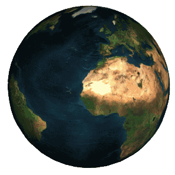

Общие характеристики
Возраст:
4,5682±0,0006 млрд лет
Расположение:
- Местное межзвёздное облако
- Местный пузырь
- рукав Ориона
- Млечный Путь
- Местная группа галактик
Ближайшая звезда:
- Проксима Центавра (4,21—4,24 св. лет)
- Система Альфа Центавра (4,37 св. лет)
Третья космическая скорость:
16,65 км/с

Солнечная система
Солнечная система — планетная система, включает в себя центральную звезду — Солнце — и все естественные космические объекты, вращающиеся вокруг Солнца. Она сформировалась путём гравитационного сжатия газопылевого облака примерно 4,57 млрд лет назад.
Общая масса Солнечной системы составляет около 1,0014 M☉. Большая часть её приходится на Солнце; оставшаяся часть практически полностью содержится в восьми отдалённых друг от друга планетах, имеющих близкие к круговым орбиты, лежащие почти в одной плоскости — плоскости эклиптики.
Планетная система
Самая отдалённая планета от Солнца:
Нептун (4,503 млрд км, 30,1 а.е.)
Расстояние до пояса Койпера:
30—50 а.е.
Количество звёзд:
1 (Солнце)
Количество известных планет: 8
Число карликовых планет: 5
Число спутников:
639 (204 у планет и 435 у малых тел Солнечной системы
Число малых тел:
более 1 000 000 (на ноябрь 2020 года)
Число комет:
3690 (на ноябрь 2020 года)